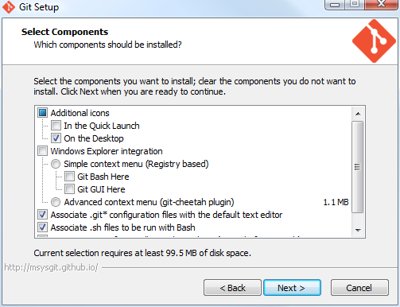
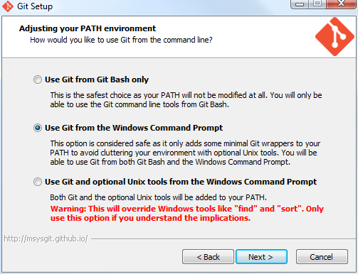
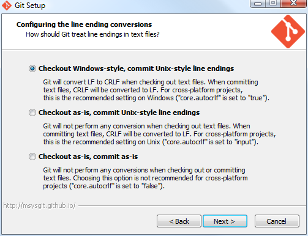

Install Git
Recommended settings
The screenshots below show the recommended settings although almost any settings choices will work for our use. These screenshots are from installing Git-1.9.5-preview20141217.exe on Windows Vista SP2 64 bit.
A Git Bash icon is put on the Desktop. You can use the Git Bash command prompt to get the YOW Example Git repository. Windows Explorer integration is not necessary and would just be confusing since Tortoise Git integrates with Windows Explorer.

def

ghi

For 1024 pixel and higher display widths the page width is 960 pixels to fit on 1024 x 768 displays with spare room for the web browser's scroll bar. The styles.css sets this. At less than 1024 pixel display width the page width is allowed to adjust to fit.
References